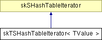

Main Page Class Hierarchy Alphabetical List Compound List File List Compound Members
skTSHashTableIterator< TValue > Class Template Reference
This class provides a type-safe iterator for the templated hash table.
More...
#include <skSHashTable.h>
Inheritance diagram for skTSHashTableIterator< TValue >:
_map" border="0" alt="">
List of all members.
Detailed Description
template<class TValue>
class skTSHashTableIterator< TValue >
This class provides a type-safe iterator for the templated hash table.
The documentation for this class was generated from the following files:
Generated on Sat Apr 19 18:54:40 2003 for Simkin by
 1.3
1.3